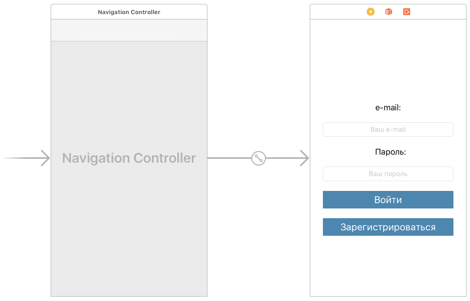
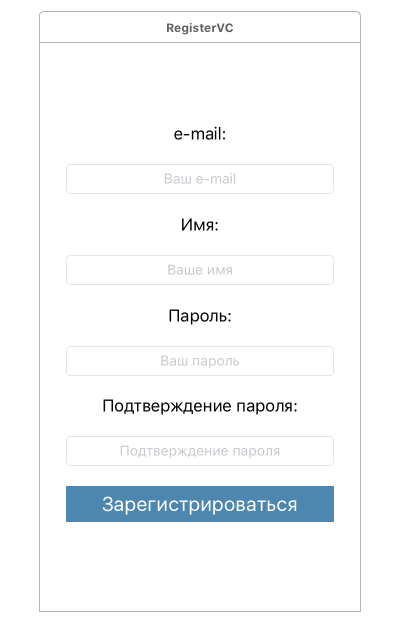
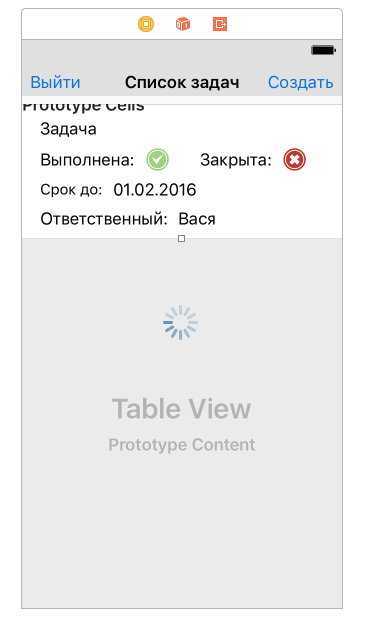
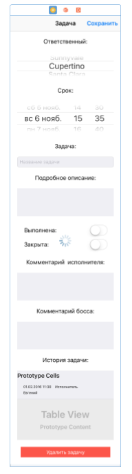

Приложение "Список задач"
Данная документация содержит описание демонстрационного приложения "Список задач". Исходный код приложения доступен в репозитории https://github.com/Scorocode/scorocode-SDK-swift/tree/master.
Данное приложение позволяет ставить задачи сотрудникам и контролировать их выполнение. Функции прложения:
- Зарегистрировать нового пользователя в БД приложения
- Провести аутентификацию пользователя приложения
- Провести деаутентификацию пользователя приложения.
- Посмотреть список задач
- Добавить задачу
- Удалить задачу
- Посмотреть подробную информацию о задаче
- Изменить параметры задачи
- Оставлять комментарии к задаче от постановщика и от исполнителя задачи
- Назначать исполнителя задачи и срок выполнения
- Проставлять статус задачи от исполнителя, закрывать задачу постановщиком
- Оповестить поставновщика задач о выполнении задачи push-собщением
- Оповестить исполнителя задачи о закрытии/доработке задачи push-собщением
- Оповестить постановщика задач о просроченном сроке выполнения задачи исполнителем push-собщением
- Смотреть историю изменения/выполнения задачи
Структура данных приложения:
Создана коллекция tasks со следующими полями:
- Closed (String)
- Done (String)
- bossComment (String)
- closeDate (Date)
- comment (String)
- detailed (String)
- name (String)
- user (Pointer)
Создана коллекция history со следующими полями:
- field (String)
- task (Pointer)
- value (String)
В системную коллекцию Roles добавлены 3 документа со следующими значениями поля name соответственно:
- boss
- manager
Общие функции приложения
Для оповещения пользователя добавим extension к базовому классу UIViewController показа alert-сообщения с заголовком, текстом сообщения и выполняемым действием при закрытии сообщения:
// Show alert with title and message and execute action extension UIViewController { func showAlert(title: String, message: String, completion: (() -> Void)?) { let alert = UIAlertController(title: title, message: message, preferredStyle: .alert) let ok = UIAlertAction(title: "OK", style: .default) { action in completion?() } alert.addAction(ok) present(alert, animated: true, completion: nil) } }
Для автоматического увеличения/уменьшения view текущего viewcontroller'а при показе системной клавиатуры добавим следующий extension:
extension UIViewController { // register func setupViewResizerOnKeyboardShown() { NotificationCenter.default.addObserver(self, selector: #selector(UIViewController.keyboardWillShowForResizing), name: Notification.Name.UIKeyboardWillShow, object: nil) NotificationCenter.default.addObserver(self, selector: #selector(UIViewController.keyboardWillHideForResizing), name: Notification.Name.UIKeyboardWillHide, object: nil) } // resize view on show keyboard func keyboardWillShowForResizing(notification: Notification) { if let keyboardSize = (notification.userInfo?[UIKeyboardFrameEndUserInfoKey] as? NSValue)?.cgRectValue, let window = self.view.window?.frame { self.view.frame = CGRect(x: self.view.frame.origin.x, y: self.view.frame.origin.y, width: self.view.frame.width, height: window.origin.y + window.height - keyboardSize.height) } else { print("We're showing the keyboard and either the keyboard size or window is nil: panic widely.") } } // resize view on hide keyboard func keyboardWillHideForResizing(notification: Notification) { if let keyboardSize = (notification.userInfo?[UIKeyboardFrameEndUserInfoKey] as? NSValue)?.cgRectValue { let viewHeight = self.view.frame.height self.view.frame = CGRect(x: self.view.frame.origin.x, y: self.view.frame.origin.y, width: self.view.frame.width, height: viewHeight + keyboardSize.height) } else { print("We're about to hide the keyboard and the keyboard size is nil. Now is the rapture.") } } }
setupViewResizerOnKeyboardShown() мы автоматически подпишемся на уведомления о показе/скрытии клавиатуры и будем вызывать соответствующие методы увеличения/уменьшения корневого view.
Добавим последний extension для автоматического скрытия клавиатуы при тапе вне области клавиатуры:
// hide keyboard on tap out of the keyboard extension UIViewController { func hideKeyboardWhenTappedAround() { let tap: UITapGestureRecognizer = UITapGestureRecognizer(target: self, action: #selector(UIViewController.dismissKeyboard)) tap.cancelsTouchesInView = false view.addGestureRecognizer(tap) } func dismissKeyboard() { view.endEditing(true) } }
viewDidLoad():
override func viewDidLoad() { super.viewDidLoad() // keyboard show-hide, resize window. setupViewResizerOnKeyboardShown() hideKeyboardWhenTappedAround() }
Инициализация ScorocodeSDK
Добавим в метод application(_ application: UIApplication, didFinishLaunchingWithOptions launchOptions: [UIApplicationLaunchOptionsKey: Any]?) класса AppDelegate инициализацию ScorocodeSDK:
//scorocode init let applicationId = "cd02126a02e44643ba38c923cf699bb7" let clientId = "900ca6a05f604eb8a88aac6941efcaa4" let accessKey = "32e4b1c15e7d470dbbacab57fa6e8406" let fileKey = "98bd371cdca944bcbebd45eb13fa17b6" let messageKey = "171f8ac1fa6f4ed8b3ec623739b2ad04" SC.initWith(applicationId: applicationId, clientId: clientId, accessKey: accessKey, fileKey: fileKey, messageKey: messageKey)
Стартовый экран приложения.
Создадим стартовый контроллер приложения с именем LoginVC. Для этого в Xcode выберем элемент View Contoller и перетащим его в storyboard. В приложении мы будем использовать 'UINavigationController' для навигации, поэтому выделим контроллер 'LoginVC' и выберем в Xcode Editor → Embed in → Navigation Controller. Накидаем на стартовый контроллер поля для ввода логина, пароля, метки полей и две кнопки - для логина пользователя и регистрации пользователя.
Стартовый ViewController приложения, соответствующий классу LoginVC, показан на рисунке:

На данном экране пользователь БД может ввести свой логин и пароль и системе. Приложения проведет проверку правильности введенных данных при помощи метода login() класса LoginVC. Использование данного метода показано в листинге:
func login(email: String, password: String) { let scUser = SCUser() scUser.login(email, password: password) { success, error, result in if success { self.user.saveCredentials(email: email, password: password) self.user.parseUser(userDictionary: result?["user"] as? [String: Any]) self.user.saveTokenToServer() self.showAlert(title: "Вход выполнен", message: "Добро пожаловать \(self.user.name) !") { let taskListVC = self.storyboard?.instantiateViewController(withIdentifier: "TaskListVC") as! TaskListVC self.navigationController?.show(taskListVC, sender: self) } } else { self.showAlert(title: "Вход не выполнен!", message: "проверьте email и пароль.", completion: nil) } } }
В данном методе мы создаем новый экземпляр класса SCUser и вызываем его метод login при этом информацию о email и password пользователя мы берем из соответствующих TextFiled. Метод login проверит тот факт, что пользователь с таким email и паролем существует в коллекции «users».
В случае если в коллекции «users» имеется пользователь с указанными email и password, то будет выполнен блок кода:
self.user.saveCredentials(email: email, password: password) self.user.parseUser(userDictionary: result?["user"] as? [String: Any]) self.user.saveTokenToServer() self.showAlert(title: "Вход выполнен", message: "Добро пожаловать \(self.user.name) !") { let taskListVC = self.storyboard?.instantiateViewController(withIdentifier: "TaskListVC") as! TaskListVC self.navigationController?.show(taskListVC, sender: self) }
Метод
func saveCredentials(email: String, password: String) { self.email = email self.password = password UserDefaults.standard.set(email, forKey: "email") UserDefaults.standard.set(password, forKey: "password") }
Метод
func parseUser(userDictionary: [String:Any]?) { if let name = userDictionary?["username"] as? String, let id = userDictionary?["_id"] as? String, let email = userDictionary?["email"] as? String, let roles = userDictionary?["roles"] as? [String] { self.name = name self.id = id self.email = email if let roleId = roles.first { var scQuery = SCQuery(collection: "roles") scQuery.equalTo("_id", SCString(roleId)) scQuery.find({ (success, error, result) in if success, let role = (result?.values.first as? [String: Any])?["name"] as? String, role == "boss" { self.isBoss = true } }) } else { self.isBoss = false } } }
manager или boss. Для этого созадется новый объект SCQuery, объекту выставляется условие выборки и запускается поиск по запросу.
Если запрос находит в списке ролей пользователя роль с именем boss - то пользователь получает возможность ставить задачи сотрудникам, удалять задачи, редактировать большую часть параметров задачи и видеть все задачи для всех пользователей.
Если запрос не находит в списке ролей пользователя роль с именем boss - то пользователь помечается как исполнитель задач. Исполнитель сможет видеть только свои задачи, писать комментарий исполнителя и менять статус задачи на "выполнено".
Метод
func saveTokenToServer() { var scQuery = SCQuery(collection: "devices") scQuery.equalTo("deviceId", SCString(token)) // one device - one user. scQuery.remove() { success, error, result in if success { let scObject = SCObject(collection: "devices") scObject.set(["userId": SCString(self.id), "deviceType": SCString("ios"), "deviceId": SCString(self.token) ]) scObject.save() { success, error, result in if success { print("token saved.") } else if error != nil { print("token didnt saved! Error: \(error.debugDescription)") } } } else { print("Error while updating device token, Error: \(error!)") } } }
devices. Токен нужен для рассылки push-сообщений пользователям. При этом, на случай, если на одном устрйстве будут работать несколько пользователей, будем сперва удалять сохраненный токен с сервера, если токен уже был сохранен на сервере. Удаление объекта производится методом remove() класса SCQuery. Сохранение нового токена в коллекцию devices осуществляется с помощью методов:
set() - установить поля документа.
save() - сохранить документ.
В зависимости от результата попытки регистрации пользователя, приложение показывает пользователю сообщение и просит перепроверить вводимые данные, или сообщает об успешной регистрации и переходит на следующий экран.
На стартовом экране так же имеется кнопка «Зарегистрироваться», позволяющая зарегистрировать нового пользователя в системе (добавить его в коллекцию «users» БД). Регистрация пользователя осуществляется на следующем экране, добавим обработчик нажатия на кнопку "Зарегистрироваться":
@IBAction func buttonRegisterTapped(_ sender: Any) { let registerVC = storyboard?.instantiateViewController(withIdentifier: "RegisterVC") as! RegisterVC navigationController?.pushViewController(registerVC, animated: true) }
Экран регистрации нового пользователя
Создадим новый ViewController с именем RegisterVC и добавим элементы TextField для ввода email, имени, пароля и подтверждения пароля пользователя. А также добавим кнопку "Зарегистрироваться". Данный экран показан на рисунке:

На данном экране вводятся все необходимые поля документа (характеризующие пользователя). Добавим обработчик нажатия для кнопки «Зарегистрировать» вызывающий метод signup класса RegisterVC для регистрации нового пользователя:
@IBAction func buttonRegisterTapped(_ sender: AnyObject) { guard textFieldPassword.text == textFieldConfirmPassword.text, textFieldConfirmPassword.text != "" else { showAlert(title: "Пароли должны совпадать", message: "Пароль и подтверждение пароля не совпадают!", completion: nil) return } guard let email = textFieldEmail.text, email != "", let password = textFieldPassword.text, password != "" else { showAlert(title: "Регистрация не выполнена!", message: "Email и пароль доолжны быть заполнены.", completion: nil) return } signup(email: textFieldEmail.text!, password: textFieldPassword.text!, name: textFieldName.text ?? "") }
func signup(email: String, password: String, name: String) { let scUser = SCUser() scUser.signup(name, email: email, password: password) { (success, error, result) in if success { self.user.saveCredentials(email: email, password: password) self.user.saveTokenToServer() self.user.parseUser(userDictionary: result?["user"] as? [String: Any]) self.showAlert(title: "Успешно", message: "Вы успешно зарегистрировались") { let taskListVC = self.storyboard?.instantiateViewController(withIdentifier: "TaskListVC") as! TaskListVC self.navigationController?.pushViewController(taskListVC, animated: true) } } else { self.showAlert(title: "Регистрация не выполнена!", message: "Попробуйте еще раз.", completion: nil) } } }
В случае если регистрация пользователя прошла успешно (т.е если sdk инициализирован, все ключи указаны правильно и нет конфликта с уже существующими пользователями), будет выполнен переход к экрану списка задач.
Экран списка задач.
Создадим экран списка задач приложения с именем TaskListVC и добавим на него элемент UITableView вместе с элементом UITableViewCell. На данном экране пользователь с ролью maanger будет видеть только свои задачи, а пользователь с ролью boss будет видеть все задачи. Кнопка "Создать" будет доступна только пользователю с ролью boss. На элемент UITableViewCell перетащим элементы для отображения информации о задаче - имя задачи, статусы задачи, ответственный и срок выполнения. Также добавим две кнопки - "Выйти" (для деаутентификации пользователя) и "Создать" (для создания новой задачи). Вид экрана список задач показана на картинке:

Экран представляет собой TableView в который мы передаем информацию о задачах, хранящихся в БД.
Добавим класс TaskListCell, который будет реализовывать внешний вид ячейки таблицы:
class TaskListCell : UITableViewCell { @IBOutlet weak var labelTaskName: UILabel! @IBOutlet weak var imageViewStatusDone: UIImageView! @IBOutlet weak var imageViewStatusClosed: UIImageView! @IBOutlet weak var labelCloseDate: UILabel! @IBOutlet weak var labelUsername: UILabel! func setupCell(_ taskName: String, statusDone: Bool, statusClosed: Bool, closeDate: Date, username: String) { self.labelTaskName.text = taskName self.imageViewStatusDone.image = statusDone ? UIImage(named: "StatusOk") : UIImage(named: "StatusBad") self.imageViewStatusClosed.image = statusClosed ? UIImage(named: "StatusOk") : UIImage(named: "StatusBad") self.labelUsername.text = username let dateFormatter = DateFormatter() dateFormatter.dateFormat = "dd-MM-yyyy HH:mm" dateFormatter.timeZone = TimeZone.autoupdatingCurrent let dateObj = dateFormatter.string(from: closeDate) self.labelCloseDate.text = dateObj self.contentView.alpha = statusClosed ? 0.3 : 1.0 } }
В класс ячейки таблицы выведены аутлеты из сториборда приложения, представляющие собой элементы в ячейке таблицы, а так же создан метод setupCell для настройки внешнего вида таблицы.
Добавим в код контроллера экрана код для работы таблицы. Для удобства пользователей будем подкрашивать четные и нечетные ячейки разным цветом:
func tableView(_ tableView: UITableView, numberOfRowsInSection section: Int) -> Int { return taskList.count } func tableView(_ tableView: UITableView, heightForFooterInSection section: Int) -> CGFloat { return 0.01 } func tableView(_ tableView: UITableView, heightForHeaderInSection section: Int) -> CGFloat { return 0.01 } func tableView(_ tableView: UITableView, cellForRowAt indexPath: IndexPath) -> UITableViewCell { let cell = tableView.dequeueReusableCell(withIdentifier: "cell") as! TaskListCell let task = taskList[indexPath.row] cell.backgroundColor = (indexPath.row % 2 == 0) ? UIColor(hex: 0xEFEFEF) : UIColor(hex: 0xFEFEFE) cell.setupCell(task.name, statusDone: task.isDone, statusClosed: task.isClose, closeDate: task.closeDate, username: task.username) return cell }
Для отображения информации создадим метод с именем getTasks код которого показан ниже:
func getTasks() { view.isUserInteractionEnabled = false activityIndicator.startAnimating() taskList.removeAll() self.tableView.reloadData() var scQuery = SCQuery(collection: "tasks") if !user.isBoss { scQuery.equalTo("user", SCString(user.id)) } scQuery.find() { success, error, result in self.view.isUserInteractionEnabled = true self.activityIndicator.stopAnimating() if success && (result?.count)! > 0 { for e in (result?.values)! { guard let elem = e as? [String:Any] else { break } let task = Task() if let id = elem["_id"] as? String { task.id = id } if let name = elem["name"] as? String { task.name = name } if let isClose = elem["Closed"] as? Bool { task.isClose = isClose } if let isDone = elem["Done"] as? Bool { task.isDone = isDone } if let closeDate = elem["closeDate"] as? Date { task.closeDate = closeDate } if let comment = elem["comment"] as? String { task.comment = comment } if let bossComment = elem["bossComment"] as? String { task.bossComment = bossComment } if let detailed = elem["detailed"] as? String { task.detailed = detailed } if let user = elem["user"] as? String { task.user = user } self.getUserNameAndAddTask(task) } } else { if success { self.showAlert(title: "", message: "Список задач пока пуст.", completion: nil) } self.view.isUserInteractionEnabled = true self.activityIndicator.stopAnimating() } } }
Метод getTasks производит поиск документов в коллекции tasks с помощью метода find() класса SCQuery. При этом, если пользователь не обладает ролью boss, то в запрос устанавливается условие для поиска документов только для текущего пользователя:
if !user.isBoss { scQuery.equalTo("user", SCString(user.id)) }
Далее метод getTasks парсит ответ сервера с документами, разбирая поля документа. После чего происходит вызов метода:
func getUserNameAndAddTask(_ task: Task) { view.isUserInteractionEnabled = false activityIndicator.startAnimating() var scQuery = SCQuery(collection: "users") scQuery.fields(["username"]) scQuery.equalTo("_id", SCString(task.user)) scQuery.find() { success, error, result in if success && (result?.count)! > 0 { if let username = (result?.values.first as? [String: Any])?["username"] as? String { task.username = username } } else { self.showAlert(title: "Ошибка!", message: "Не найдено имя пользователя для задачи \(task.name)", completion: nil) } self.taskList.append(task) //sort by fields: isClosed, closeDate self.taskList.sort(by: {t1, t2 in if t1.isClose == t2.isClose { return t1.closeDate.compare(t2.closeDate) == ComparisonResult.orderedAscending } return !t1.isClose && t2.isClose }) self.tableView.reloadData() self.view.isUserInteractionEnabled = true self.activityIndicator.stopAnimating() } }
taskList. Так как запросы выполняется асинхронно, то после каждого добавления задачи в список мы заново сортируем список. Сначала по дате выполнения, а потом по статусу - "закрыта" или "не закрыта". Закрытые задачи показываются всегда в конце списка, для более удобной навигации.
Добавим в код данного экрана обработчик кнопки "Выход":
@IBAction func buttonLogoutPressed(_ sender: AnyObject) { let alert = UIAlertController(title: "Выйти из системы?", message: nil, preferredStyle: .alert) let logout = UIAlertAction(title: "Выйти", style: .destructive) { action in self.user.clear() self.navigationController?.popToRootViewController(animated: true) } alert.addAction(logout) let cancel = UIAlertAction(title: "Отмена", style: .cancel, handler: nil) alert.addAction(cancel) present(alert, animated: true, completion: nil) }
clear у класса User:
func clear() { id = "" email = "" password = "" name = "" isBoss = false token = "" UserDefaults.standard.set("", forKey: "email") UserDefaults.standard.set("", forKey: "password") //remove token from server: removeTokenFromServer() }
removeTokenFromServer у класса `User':
func removeTokenFromServer() { var scQuery = SCQuery(collection: "devices") scQuery.equalTo("deviceId", SCString(self.token)) // one device - one user. scQuery.remove() { success, error, result in if success { print("token removed") } else if error != nil { print("Error while updating device token, Error: \(error!)") } } }
Добавим в код экрана обработчик нажатия на кнопку "Создать":
@IBAction func buttonCreateTouchUpInside(_ sender: AnyObject) { let taskDetailVC = storyboard?.instantiateViewController(withIdentifier: "TaskDetailVC") as! TaskDetailVC taskDetailVC.isCreateMode = true navigationController?.pushViewController(taskDetailVC, animated: true) }
Обработчик осуществляет переход на экран показа деталей задачи, одновременно являющийся и экраном создания задачи. Для задания режима работы экрана деталей задачи устанавливается переменная isCreateMode. Так как мы нажимаем на кнопку создания новой задачи, то переменная isCreateMode устанавливается в зачение true
Добавим в код контроллера экрана обработку клика по ячейке таблицы. При клике на ячеке таблицы пользователь переходит на экран показа деталей задачи. Для этого установим вышеописанную переменную isCreateMode в значение false. А также передадим данные задачи из ячейки:
func tableView(_ tableView: UITableView, didSelectRowAt indexPath: IndexPath) { let taskDetailVC = storyboard?.instantiateViewController(withIdentifier: "TaskDetailVC") as! TaskDetailVC taskDetailVC.task = taskList[indexPath.row] taskDetailVC.isCreateMode = false navigationController?.pushViewController(taskDetailVC, animated: true) }
Экран с деталями задачи / создания новой задачи.
Создадим UIViewController с именем TaskDetailVC и добавим его на storyboard приложения. Набросаем элементы, отображающие параметры задачи - поле для выбора ответственного пользователя, срок выполнения задачи, название задачи, подробное описание задачи, задача выполнена, задача закрыта, комментарий исполнителя, комментарий постановщика, история задачи и кнопка "удалить задачу". Вид экрана показан на рисунке:

На этом экране пользователь вводит всю необходиму информацию о задаче и нажимает кнопку "Сохранить". При этом программа создает новый документ, заполняет его поля и сохраняет на сервере. Режим работы экрана зависит от переменной isCreateMode - true для режима создания новой задачи и false для редактирования существующей задачи. Для назначения ответственных нам понадобятся имена и идентификаторы пользователей. Имена мы будем показывать на экране, а связывать задачу с учетной записью пользователя - по идентификаторам. Добавим код в метод viewDidLoad загрузки имен и идентификаторов пользователей:
override func viewDidLoad() { super.viewDidLoad() setupViewResizerOnKeyboardShown() hideKeyboardWhenTappedAround() getUserListForUserPicker() if isCreateMode == false{ getHistory() } }
getUserListForUserPicker имеет вид:
func getUserListForUserPicker() { userList.removeAll() // if we look details of task and we are not a boss if (!isCreateMode && !user.isBoss) || task.isClose { userList.append(IdAndName(id: task.user, name: task.username)) pickerViewUsers.reloadAllComponents() } else { // if we create new task or boss opens task: var scQuery = SCQuery(collection: "users") scQuery.fields(["_id","username"]) scQuery.notEqualTo("_id", SCString(user.id)) scQuery.find() { success, error, result in if success && (result?.count)! > 0 { for elem in (result!.values) { if let id = (elem as? [String: Any])?["_id"] as? String, let name = (elem as? [String: Any])?["username"] as? String { self.userList.append(IdAndName(id: id, name: name)) } } } else { self.showAlert(title: "Ошибка!", message: "Не удалось получить список исполнителей", completion: nil) } self.userList.sort(by: {$0.name < $1.name}) self.pickerViewUsers.reloadAllComponents() //select current user for (index, user) in self.userList.enumerated() { if user.id == self.task.user { self.pickerViewUsers.selectRow(index, inComponent: 0, animated: true) break } } } } }
users и сохраняем всех пользователей, кроме текущего. Дальше происходит парсинг ответа сервера и сохранение пары "идентификатор, имя пользователя" в список userList. далее мы сортируем список pickerViewUsers и переходим на текущего пользователя у элемента pickerViewUsers.
Метод viewDidLoad также вызывает метод для загузки истории задачи, если экран находится в режиме редактирования:
func getHistory() { historyList.removeAll() var scQuery = SCQuery(collection: "history") scQuery.fields(["createdAt","value","field"]) scQuery.equalTo("task", SCString(task.id)) scQuery.find() { success, error, result in if success && (result?.count)! > 0 { for elem in (result?.values)! { if let date = (elem as? [String: Any])?["createdAt"] as? Date, let value = (elem as? [String: Any])?["value"] as? String, let field = (elem as? [String: Any])?["field"] as? String { self.historyList.append(History(date: date, value: value, field: field)) } } } else { self.showAlert(title: "Ошибка!", message: "Не удалось загрузить историю задачи", completion: nil) } self.historyList.sort(by: {$0.date.compare($1.date) == ComparisonResult.orderedAscending}) self.tableViewHistory.reloadData() } }
history с возвратом полей createdAt (время действия), value (новое значение), field (имя поля, которое было изменено). После выборки, парсится ответ от сервера и документ истории сохраняется в список historyList
Рассмотрим самый большой метод экрана saveHistory, который реализует сохранение истории изменений:
func saveHistory(_ newTask: Task) { var items = [SCObject]() var mode = "" /* mode values: var UserHasDoneTask var BossHasCloseTask var BossHasntDone */ if isCreateMode { let scObject = SCObject(collection: "history") scObject.set(["task": SCString(newTask.id), "field": SCString("Задача:"), "value": SCString("Создана.") ]) items.append(scObject) } else { if task.name != newTask.name { let item = SCObject(collection: "history") item.set(["task": SCString(newTask.id), "field": SCString("Название задачи изменено:"), "value": SCString(newTask.name)]) items.append(item) } if task.comment != newTask.comment { let item = SCObject(collection: "history") item.set(["task": SCString(newTask.id), "field": SCString("Исполнитель изменил комментарий:"), "value": SCString(newTask.comment)]) items.append(item) } if task.bossComment != newTask.bossComment { let item = SCObject(collection: "history") item.set(["task": SCString(newTask.id), "field": SCString("Босс изменил комментарий:"), "value": SCString(newTask.bossComment)]) items.append(item) } if task.detailed != newTask.detailed { let item = SCObject(collection: "history") item.set(["task": SCString(newTask.id), "field": SCString("Описание изменено:"), "value": SCString(newTask.detailed)]) items.append(item) } if task.closeDate != newTask.closeDate { let dateFormatter = DateFormatter() dateFormatter.timeZone = TimeZone.autoupdatingCurrent dateFormatter.dateFormat = "dd-MM-yyyy HH:mm" let value = dateFormatter.string(from: newTask.closeDate) let item = SCObject(collection: "history") item.set(["task": SCString(newTask.id), "field": SCString("Изменен срок:"), "value": SCString(value)]) items.append(item) } if task.username != newTask.username { let item = SCObject(collection: "history") item.set(["task": SCString(newTask.id), "field": SCString("Исполнитель изменен:"), "value": SCString(newTask.username)]) items.append(item) } if task.isDone != newTask.isDone { let item = SCObject(collection: "history") let statusString = newTask.isDone ? "Выполнена." : "Не выполнена." item.set(["task": SCString(newTask.id), "field": SCString("Задача:"), "value": SCString(statusString)]) items.append(item) if newTask.isDone && !user.isBoss { mode = "UserHasDoneTask" } else if !newTask.isDone && user.isBoss { mode = "BossHasntDone" } } if task.isClose != newTask.isClose { let item = SCObject(collection: "history") item.set(["task": SCString(newTask.id), "field": SCString("Задача:"), "value": SCString("Закрыта.")]) items.append(item) if newTask.isClose { mode = "BossHasCloseTask" } } alertUser(mode: mode, userId: newTask.user, userName: newTask.username, taskName: newTask.name) } //try to save for i in 0..<items.count { let scObject = items[i] activityIndicator.startAnimating() contentView.isUserInteractionEnabled = false scObject.save() { success, error, result in self.activityIndicator.stopAnimating() self.contentView.isUserInteractionEnabled = true if !success { self.showAlert(title: "Ошибка!", message: "Не удалось сохранить элемент истории", completion: nil) } if i == items.count - 1 { self.navigationController?.popViewController(animated: true) } } } }
newTask, представляющий собой новые параметры задачи. Если экран работает в режиме создания новой задачи - все просто, записываем на сервер один документ с записью о созднии задачи. Если экран работает в режиме редактирования, то мы должны сравнить исходное состояние задачи с измененнным ссстяонимем задачи. Для этого мы поочередно сравниваем переменные двух задач, и при несовпадении - добавляем запись об изменении в список изменений items.
После формирования списка документов запускается цикл сохранения документов на сервер. Так как запросы на сохранение документов на сервер выполняются асинхронно, после сохранения последнего документа из списка мы возвращаемся на экран списка задач.
Так же в данном методе проверяется, не изменился ли статус задач. Если статус поменялся - мы должны оповестить об этом исполнителя или постановщика задачи с помощью push-сообщения. Отлеживаются три события:
var UserHasDoneTask - исполнитель изменил статус задачи на "Выполнено"
var BossHasCloseTask - постановщик изменил статус задачи на "закрыто"
var BossHasntDone - постановщик изменил статус задачи на "Не выполнено", то есть остался неудовлетворен результатом выполнения задачи и послал задачу на доработку.
данные события отправляются в скрипт на сервере, с помощью метода alertUser:
//send push to user/boss, if the task has changes done/close status func alertUser(mode: String, userId: String, userName: String, taskName: String) { guard mode != "" else { return } var rolesQuery = SCQuery(collection: "roles") var usersQuery = SCQuery(collection: "users") rolesQuery.equalTo("name", SCString("boss")) rolesQuery.fields(["_id"]) rolesQuery.find { (success, error, result) in if success, let roleBossId = (result?.values.first as? [String: Any])?["_id"] as? String { usersQuery.equalTo("roles", SCArray(stringArray: [roleBossId])) usersQuery.find({ (success, error, result) in if success, let bossId = (result?.values.first as? [String: Any])?["_id"] as? String{ let pool = ["mode":mode, "userId":userId, "userName":userName, "taskName":taskName, "bossId": bossId] let script = SCScript(id: self.kTaskChangeStatusSendPushScriptID) script.run(pool: pool, debug: false) { (success, error) in if success { print("script \(self.kTaskChangeStatusSendPushScriptID) was executed.") } else if error != nil { print(error!) } } } }) } } }
pool. В данном методе серверному скрипту передаются переменные:
mode - вид события
userId - идентификатор иполнителя задачи
userName - имя исполнителя задачи
taskName - название задачи
'bossId' - идентификатор поставновщика
Данный метод сначала запрашивает идентификатор роли "boss", потом ищет пользователя с такой ролью. Если пользователь найден - скрипт запускается методом run класса SCScript.
Исходный код скрипта:
var Scorocode = require('scorocode'); var UserHasDoneTask = " выполнил задачу: " var BossHasCloseTask = "Босс закрыл задачу: " var BossHasntDone = "Босс не одобрил выполнение задачи: " Scorocode.Init({ ApplicationID: "98bc4bacb5edea727cfb8fae25f71b59", JavaScriptKey: "24d0d42ab02cf546b88b9134cf1d1468", FileKey: "351cb3d71efef69e346ac5657dd16c1c", MessageKey: "35d5a173e0391ae83d60a6a756a44051" }); userClosedTask(); function userClosedTask() { // user has closed the task var Devices = new Scorocode.Query("devices"); var Broadcast = new Scorocode.Messenger(); var userId = "" var bossId = pool["bossId"] var userName = pool["userName"] var taskName = pool["taskName"] var text = "" var mode = pool["mode"] console.log(pool) switch (mode) { case 'BossHasCloseTask': userId = pool["userId"] text = BossHasCloseTask + taskName break; case 'BossHasntDone': userId = pool["userId"] text = BossHasntDone + taskName break; case 'UserHasDoneTask': userId = bossId text = userName + UserHasDoneTask + taskName break; default: return } //send push to boss Devices.equalTo("userId", userId) Broadcast.sendPush({ where: Devices, data: {"text": text}//text} }) .then((success)=>{ console.log("success!"); console.log(success); }) .catch((error)=>{ console.log("error!"); console.log(error) }); }
Подробную информацию о написании серверных скриптов вы можете найти на портале документации к Scorocode http://scorocode.github.io/scorocode-docs/JS/javascript/
Добавим так же обработчик нажатия на кнопку "Сохранить":
@IBAction func buttonSaveTouchUpInside(_ sender: AnyObject) { //set task params let newTask = Task() newTask.user = userList[pickerViewUsers.selectedRow(inComponent: 0)].id newTask.username = userList[pickerViewUsers.selectedRow(inComponent: 0)].name newTask.bossComment = textViewBossComment.text newTask.closeDate = datePickerDate.date newTask.comment = textViewComment.text newTask.detailed = textViewDetailed.text if isCreateMode { newTask.isClose = false newTask.isDone = false } else { newTask.isClose = switchIsClosed.isOn newTask.isDone = switchIsDone.isOn } if let text = textFieldTaskName.text { newTask.name = text } newTask.id = task.id //creating new task document or update let scObject = isCreateMode ? SCObject(collection: "tasks") : SCObject(collection: "tasks", id: task.id) scObject.set(["name": SCString(newTask.name), "Done": SCBool(newTask.isDone), "Closed": SCBool(newTask.isClose), "comment": SCString(newTask.comment), "closeDate": SCDate(newTask.closeDate), "detailed": SCString(newTask.detailed), "bossComment": SCString(newTask.bossComment), "user": SCString(newTask.user), ]) //try to create or update activityIndicator.startAnimating() contentView.isUserInteractionEnabled = false scObject.save() { success, error, result in self.activityIndicator.stopAnimating() self.contentView.isUserInteractionEnabled = true if success { // get task id if self.isCreateMode { if let id = result?["_id"] as? String { newTask.id = id } } self.saveHistory(newTask) } else { self.showAlert(title: "Ошибка!", message: "Не удалось сохранить задачу. Попробуйте еще раз", completion: nil) } } }
SCObject с идентификатором:
```SWIFT
SCObject(collection: "tasks", id: task.id)
При сохранении документа на сервер в случае успеха сервер посылает ответ содержащий идентификатор документа. Мы можем воспользоватся этим и сохранить нужный нам идентификатор задачи, если мы создаем нову задачу, дабы не делать еще один запрос к серверу:
```SWIFT
scObject.save() {
success, error, result in
self.activityIndicator.stopAnimating()
self.contentView.isUserInteractionEnabled = true
if success {
// get task id
if self.isCreateMode {
if let id = result?["_id"] as? String {
newTask.id = id
}
}
self.saveHistory(newTask)
} else {
self.showAlert(title: "Ошибка!", message: "Не удалось сохранить задачу. Попробуйте еще раз", completion: nil)
}
}
Добавм обработчик нажатия на кнопку "Удалить задачу":
@IBAction func buttonDeleteTap(_ sender: Any) { let scObject = SCObject(collection: "tasks", id: task.id) scObject.remove { (success, error, result) in if success { var scQuery = SCQuery(collection: "history") scQuery.equalTo("task", SCString(self.task.id)) scQuery.remove({ (success, error, result) in if success { self.showAlert(title: "Успешно", message: "Задача и ее история удалена") { self.navigationController?.popViewController(animated: true) } } }) } } }
Скрипт оповещения постановщика задач о просроченных сроках
Добавим на сервер скрипт:
var Scorocode = require('scorocode'); var bossId = "qRmX5rHsc6" Scorocode.Init({ ApplicationID: "98bc4bacb5edea727cfb8fae25f71b59", JavaScriptKey: "24d0d42ab02cf546b88b9134cf1d1468", FileKey: "351cb3d71efef69e346ac5657dd16c1c", MessageKey: "35d5a173e0391ae83d60a6a756a44051" }); alertBossAboutExpiredTasks(); function alertBossAboutExpiredTasks() { // Создадим новый экземпляр запроса к коллекции Tasks var Tasks = new Scorocode.Query("tasks"); var TasksIsDone = new Scorocode.Query("tasks"); var TasksIsClosed = new Scorocode.Query("tasks"); var TasksIsOver = new Scorocode.Query("tasks"); // Установим условие выборки - запросить все объекты, с истекшим сроком var now = new Date() TasksIsOver.lessThan("closeDate", now.toISOString()) // Установим условие выборки - запросить все выполненные пользователем задачи TasksIsDone.notEqualTo("Done", true) // Установим условие выборки - запросить все закрытые боссом задачи TasksIsClosed.notEqualTo("Closed", true) Tasks.and(TasksIsDone).and(TasksIsClosed).and(TasksIsOver) .find() .then((result) => { console.log(result.result) parseQueryResultAndSendPushToBoss(result.result) }) .catch((error) => { console.log(error) }); } function parseQueryResultAndSendPushToBoss(queryResult) { var Broadcast = new Scorocode.Messenger(); var Devices = new Scorocode.Query("devices"); var expiredTasks = []; for (var index in queryResult) { var textMessage = "Просрочена задача: \"" + queryResult[index].name + "\"" expiredTasks.push({"text":textMessage,"userid":queryResult[index].user}) } //send to boss expired tasks for (var key in expiredTasks) { var task = expiredTasks[key] var id = task["userid"] var text = task["text"] console.log(id,text) Devices.equalTo("userId", bossId) Broadcast.sendPush({ where: Devices, data: {"text": text} }) .then((success)=>{ console.log("success!"); console.log(success); }) .catch((error)=>{ console.log("error!"); console.log(error) }); } }